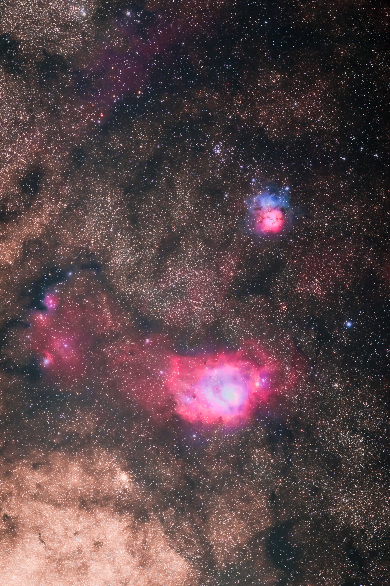
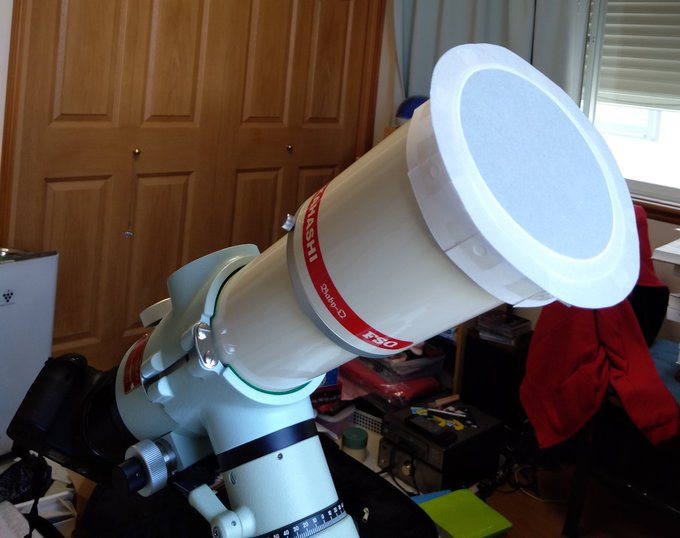
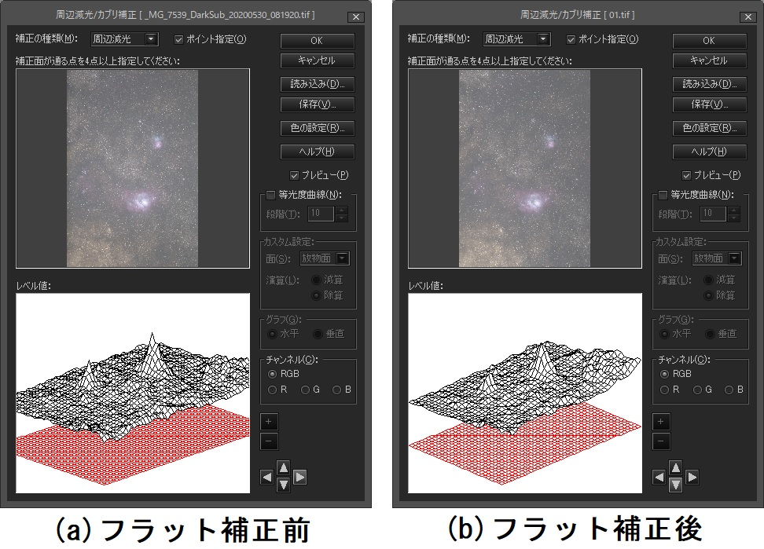
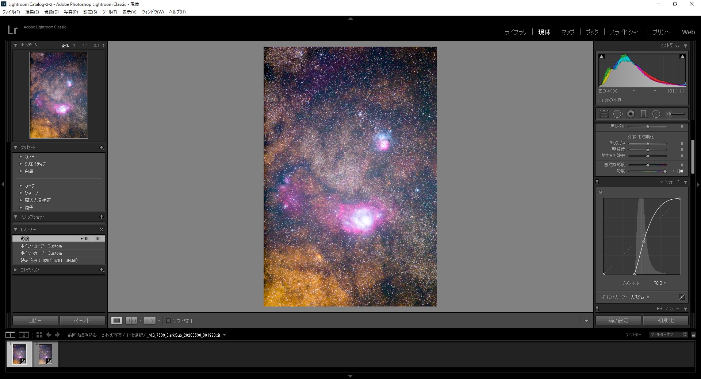
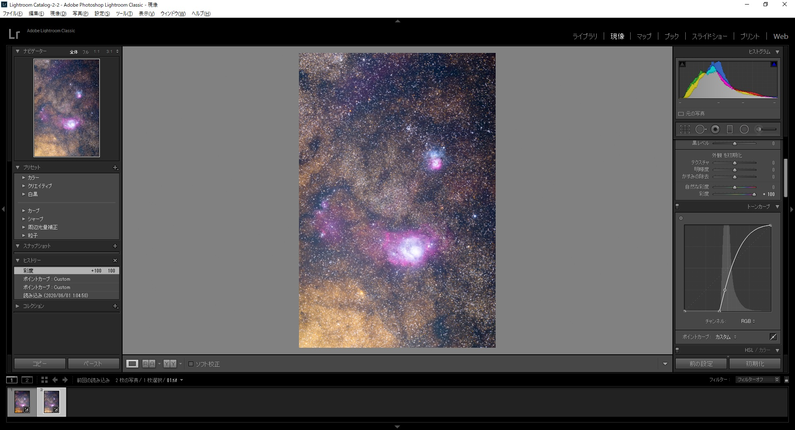
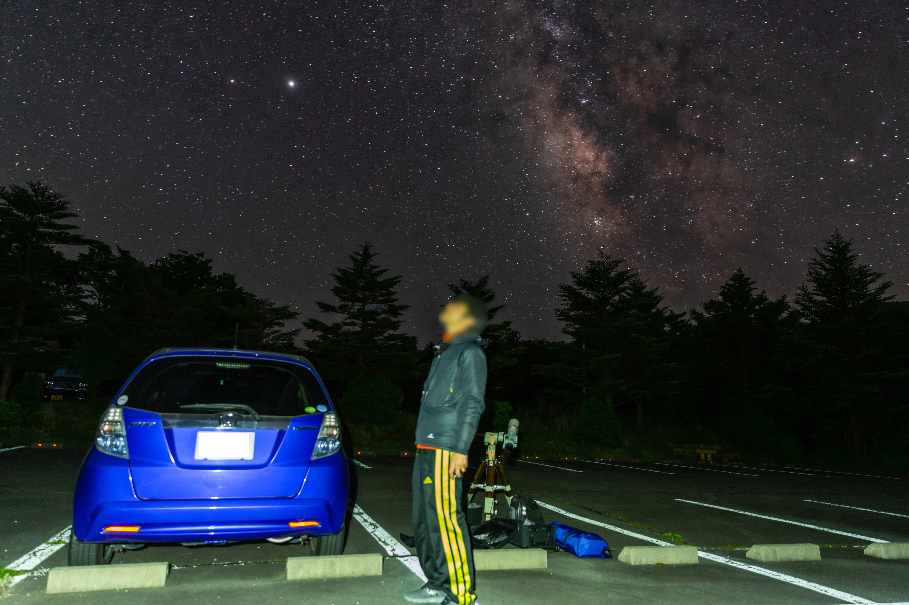

<!DOCTYPE html>
<html>

<head><meta name="generator" content="Hexo 3.8.0">
  <meta charset="utf-8">
  
    <title>
      
        【遠征記】2020年5月 天城 | 
            ほしよみ大学生のブログ
    </title>
    <meta name="viewport" content="width=device-width">
    <meta name="description" content="あいさつこんにちは．大変なご時世ですが，いかがお過ごしでしょうか．3月の小諸から2ヶ月以上ぶりに星撮りに出かけてきましたので，さっくりと書いておきます．">
<meta name="keywords" content="写真,天体写真,画像処理,遠征記">
<meta property="og:type" content="article">
<meta property="og:title" content="【遠征記】2020年5月 天城">
<meta property="og:url" content="http://dabokun.github.io/2020/06/01/00000033-2020-05-amagi/index.html">
<meta property="og:site_name" content="ほしよみ大学生のブログ">
<meta property="og:description" content="あいさつこんにちは．大変なご時世ですが，いかがお過ごしでしょうか．3月の小諸から2ヶ月以上ぶりに星撮りに出かけてきましたので，さっくりと書いておきます．">
<meta property="og:locale" content="ja">
<meta property="og:image" content="http://dabokun.github.io/2020/06/01/00000033-2020-05-amagi/card.jpg">
<meta property="og:updated_time" content="2021-06-07T14:24:08.498Z">
<meta name="twitter:card" content="summary_large_image">
<meta name="twitter:title" content="【遠征記】2020年5月 天城">
<meta name="twitter:description" content="あいさつこんにちは．大変なご時世ですが，いかがお過ごしでしょうか．3月の小諸から2ヶ月以上ぶりに星撮りに出かけてきましたので，さっくりと書いておきます．">
<meta name="twitter:image" content="http://dabokun.github.io/2020/06/01/00000033-2020-05-amagi/card.jpg">
<meta name="twitter:creator" content="@astrodabo">
      
        <link rel="alternative" href="/atom.xml" title="ほしよみ大学生のブログ" type="application/atom+xml">
        
          
            <link rel="icon" href="/images/favicon.png">
            
              <link rel="stylesheet" href="/css/style.css">
                <!--[if lt IE 9]><script src="//html5shiv.googlecode.com/svn/trunk/html5.js"></script><![endif]-->
                
                  <script data-ad-client="ca-pub-1350688970555904" async src="https://pagead2.googlesyndication.com/pagead/js/adsbygoogle.js"></script>
</head></html>
<body>
  <div id="container">
    <div class="mobile-nav-panel">
	<i class="icon-reorder icon-large"></i>
</div>
<header id="header">
	<h1 class="blog-title">
		<a href="/">
			ほしよみ大学生のブログ
		</a>
	</h1>
	<nav class="nav">
		<ul>
			
				<li><a href="/">
						Home
					</a></li>
				
				<li><a href="/categories">
						Categories
					</a></li>
				
				<li><a href="/tags">
						Tags
					</a></li>
				
				<li><a href="/archives">
						Archives
					</a></li>
				
				<li><a href="/about">
						About
					</a></li>
				
				<li><a href="/work">
						Work
					</a></li>
				
					<li><a id="nav-search-btn" class="nav-icon" title="Search"></a></li>
					<li><a href="https://github.com/dabokun"></a>
					</li>
					<li><a href="https://twitter.com/astrodabo"></a></li>
					
						<li><a href="/atom.xml" id="nav-rss-link" class="nav-icon" title="RSS Feed"></a>
						</li>
						
		</ul>
	</nav>
	<div id="search-form-wrap">
		<form action="//google.com/search" method="get" accept-charset="UTF-8" class="search-form"><input type="search" name="q" class="search-form-input" placeholder="Search"><button type="submit" class="search-form-submit">&#xF002;</button><input type="hidden" name="sitesearch" value="http://dabokun.github.io"></form>
	</div>
</header>

    <div id="main">
      <article id="post-00000033-2020-05-amagi" class="post">
	<footer class="entry-meta-header">
		<span class="meta-elements date">
			<a href="/2020/06/01/00000033-2020-05-amagi/" class="article-date">
  <time datetime="2020-05-31T15:34:19.000Z" itemprop="datePublished">2020-06-01</time>
</a>
		</span>
		<span class="meta-elements author">astr0dab0</span>
		<div class="commentscount">
			
			<a href="http://dabokun.github.io/2020/06/01/00000033-2020-05-amagi/#disqus_thread" class="article-comment-link">Comments</a>
			
		</div>
	</footer>
	
	<header class="entry-header">
		
  
    <h1 class="article-title entry-title" itemprop="name">
      【遠征記】2020年5月 天城
    </h1>
  

	</header>
	<div class="entry-content">
		
		
		<div id="toc" class="toc-article">
			<p class="toc-title">目次</p>
			<ol class="toc"><li class="toc-item toc-level-3"><a class="toc-link" href="#あいさつ"><span class="toc-number">1.</span> <span class="toc-text">あいさつ</span></a></li><li class="toc-item toc-level-3"><a class="toc-link" href="#撮ったもの"><span class="toc-number">2.</span> <span class="toc-text">撮ったもの</span></a></li></ol>
		</div>
		
		<h3 id="あいさつ"><a href="#あいさつ" class="headerlink" title="あいさつ"></a>あいさつ</h3><p>こんにちは．大変なご時世ですが，いかがお過ごしでしょうか．3月の小諸から2ヶ月以上ぶりに星撮りに出かけてきましたので，さっくりと書いておきます．</p>
<a id="more"></a>
<p>かく言う私はこの時期をどう過ごしていたかというと，基本外には出ませんでしたが，のんびり研究したり，本を読んだり，一方で某振やオンライン国際学会の準備に追われたりして<s>学生にしては</s>忙しい2ヶ月余りを送っていました．かといって，半期飛んで卒業する可能性も出てきたので，こっから修論1ヶ月チャレンジをしなければなりません．全然暇にはならない()．</p>
<p>5月も遠征に行くのは諦めていたのですが，流石に2ヶ月も引きこもっていると星見の禁断症状が出てくる…というのは半分本当半分冗談です．実際，今回遠征に行こうと思ったのは，来月からの父親の単身赴任が決まったからなんですね．星撮りを5年程度やってきて，未だに親を連れて行ったことがないというのも個人的にどうなのかという気がしますし，しばらく離れて暮らすことになってしまうので，せっかくの梅雨入り前ラストチャンスということで父親を連れて行くことにしました．</p>
<p>自宅で夕食と風呂を済ませ，21時のGPV更新を見て天城に進路を決定．予報はイマイチでしたが，3-4時にあった晴れ間に賭けました．結局，着いてからほとんど曇ることはなかったです．いつもどおり少し明るめでしたが，シーイングは良好．</p>
<p>そうそう，天城への道中で時々使うコンビニが2箇所も潰れていてショックでした．自粛の影響は，自分が外に出ず見えていなかったところで確実に出ていたんだと…．</p>
<h3 id="撮ったもの"><a href="#撮ったもの" class="headerlink" title="撮ったもの"></a>撮ったもの</h3><p>到着自体が日付を回ってからですし，夜の時間も短い季節なので，そこまで長時間の露光はかけられませんでしたが，この時期にしか撮れないM8, M20を1時間弱撮ることができました．</p>
<p></p>
<div style="text-align: center;">
”M8, M20”<br>
2020年5月30日 午前2時7分～ 天城高原ゴルフコースにて<br>
タカハシ FSQ-85EDP (450mm F5.3)<br>
Canon EOS 6D<br>
ISO 4000 / 180s * 18 = 54 min<br>
タカハシ EM-11 Temma2Jr. ノータッチガイド<br>
ライトダーク: ライトと同条件 * 8<br>
フラット: 自宅にて ISO-1000 / 1/4000s * 16<br>
フラットダーク: フラットと同条件 * 16<br>
RStacker / ステライメージ8 / Adobe Lightroom CC / Photoshop CC<br>
[<a href="https://www.astrobin.com/nar6da/" target="_blank" rel="noopener">AstroBin</a>], [<a href="https://www.flickr.com/photos/138311056@N05/49952061151/in/dateposted-public/" target="_blank" rel="noopener">Flickr</a>], [<a href="https://astrodabo.tumblr.com/post/619549560067555330/m8-m20-at-amagi-plateau-golf-cource-in-shizuoka" target="_blank" rel="noopener">Tumblr</a>]<br><br>
</div>

<p>いやーやはり美しい天体ですね．北側の淡く赤（紫？）っぽい部分が好きです．<br>さて今回は，フラットをしっかり撮ってみることにしました．「フラットはライトと同条件で撮れ！」とシンプルによく言われますが，構図以外なにを同条件にすれば良いのか個人的にはサッパリ分からずこれまで敬遠していました（だって同条件で撮ったら絶対白飛びするじゃないか…(´・ω・｀)，たぶん僕の理解の仕方が良くない）．しかし，望遠鏡で撮っている以上フラットは避けて通るわけにはいきません．とりあえず，向きだけ合わせて，なるべくヒストグラムピークがライトと同じような位置になるような設定で撮影しました．フラットは自宅で，晴れた日に網戸をした窓に向かってトレーシングペーパーをかぶせて撮りました．こんな感じです↓<br>付け焼き刃感がすごい．</p>
<p>強調前の処理手順は基本に忠実？に，</p>
<ol>
<li>ライトダークをコンポジットしてマスターダークを作る．(RStacker)</li>
<li>ライトからマスターダークを引く．(RStacker)</li>
<li>ライトをtifに変換．(Lr)</li>
<li>フラットダークからフラット用マスターダークを作る．(RStacker)</li>
<li>フラットからフラット用マスターダークを引いてコンポジットする．(RStacker)</li>
<li>ライトをコンポジットする．この時フラットを引く．(SI8)<br>というふうにしました．</li>
</ol>
<p>それでは効果を見てみましょう．フラット補正してコンポジットする前のtifとコンポジット後のtifを見比べてみます．</p>
<p></p>
<p>うーん…？確かに全体的なゴツゴツ感と中央の明るいもっこり感はなくなった気がする？よくわからないのでLrで強調してみましょう．</p>
<p>フラット補正前<br></p>
<p>フラット補正後<br></p>
<p>確かに，中央から中央右にかけて明るくなっているところが均されている感じがしますね．コンポジット時のトリミングの効果もありますが，左側の黒い落込みも改善されています．<br>構図だけしっかり覚えていれば，家で簡単にフラットが撮れると実感できたのは収穫でした．この後の強調編集でも，周辺減光やカブり補正のようなことは一切せず，とても楽でした．これからもめんどくさがらずにフラットは撮っていこう…．</p>
<p>ついでに父親も(撮ってくれと言うのでテキトーに)撮影しました．父親は山に登る人なので星空は見慣れているかと思っていましたが，かなりよく見えると感動していました．せっかく自分のカメラを持ってきたのに電池を忘れたと言うので，僕のカメラで撮影です．</p>
<p></p>
<p>僕ら以外には，Twitterで行こうかと相談していた<a href="https://twitter.com/AstronomyPisuke" target="_blank" rel="noopener">ピースケさん</a>と，他に3,4台程度の車が下段の駐車場で機材を広げていました．しっかり5～10m程度の間隔は開いていました．良い空を味わえてよかったです．<br>梅雨が開けて今より状況が落ち着いてから，また遠征したいと思います．それでは．</p>

		
	</div>
	<footer class="article-footer">
		<a href="https://twitter.com/intent/tweet?text=%E3%80%90%E9%81%A0%E5%BE%81%E8%A8%98%E3%80%912020%E5%B9%B45%E6%9C%88%20%E5%A4%A9%E5%9F%8E｜%E3%81%BB%E3%81%97%E3%82%88%E3%81%BF%E5%A4%A7%E5%AD%A6%E7%94%9F%E3%81%AE%E3%83%96%E3%83%AD%E3%82%B0&url=http://dabokun.github.io/2020/06/01/00000033-2020-05-amagi/" class="twitter-share-button" target="_blank" title="Twitter"></a>
		<script async src="https://platform.twitter.com/widgets.js" charset="utf-8"></script>

		<div id="fb-root"></div>
		<script async defer crossorigin="anonymous" src="https://connect.facebook.net/ja_JP/sdk.js#xfbml=1&version=v4.0"></script>
		<div class="fb-share-button" data-href="http://dabokun.github.io/2020/06/01/00000033-2020-05-amagi/" data-layout="button_count" data-size="small"><a target="_blank" href="https://www.facebook.com/sharer/sharer.php?u=https%3A%2F%2Fdabokun.github.io%2F&amp;src=sdkpreparse" class="fb-xfbml-parse-ignore">シェア</a></div>
	</footer>
	<footer class="entry-footer">
		<div class="entry-meta-footer">
			<span class="category">
				
  <div class="article-category">
    <a class="article-category-link" href="/categories/expedition/">遠征記</a>
  </div>

			</span>
			<span class=" tags">
				
  <ul class="article-tag-list"><li class="article-tag-list-item"><a class="article-tag-list-link" href="/tags/photography/">写真</a></li><li class="article-tag-list-item"><a class="article-tag-list-link" href="/tags/astrophotography/">天体写真</a></li><li class="article-tag-list-item"><a class="article-tag-list-link" href="/tags/processing/">画像処理</a></li><li class="article-tag-list-item"><a class="article-tag-list-link" href="/tags/expedition/">遠征記</a></li></ul>

			</span>
		</div>
	</footer>
	
	
<nav id="article-nav">
  
    <a href="/2020/07/02/00000034-2020-06-summary/" id="article-nav-newer" class="article-nav-link-wrap">
      <strong class="article-nav-caption">Newer</strong>
      <div class="article-nav-title">
        
          【遠征記】2020年6月 美ヶ原，それと部分日食
        
      </div>
    </a>
  
  
    <a href="/2020/03/25/00000032-2020-03-komoro/" id="article-nav-older" class="article-nav-link-wrap">
      <strong class="article-nav-caption">Older</strong>
      <div class="article-nav-title">
        
          【遠征記】2020年3月 小諸
        
      </div>
    </a>
  
</nav>

	
</article>


<section id="comments">
	<div id="disqus_thread">
		<noscript>Please enable JavaScript to view the <a href="//disqus.com/?ref_noscript">comments powered by
				Disqus.</a></noscript>
	</div>
</section>

    </div>
    <div class="mb-search">
  <form action="//google.com/search" method="get" accept-charset="utf-8">
    <input type="search" name="q" results="0" placeholder="Search">
    <input type="hidden" name="q" value="site:dabokun.github.io">
  </form>
</div>
<footer id="footer">
	<h1 class="footer-blog-title">
		<a href="/">ほしよみ大学生のブログ</a>
	</h1>
	<span class="copyright">
		&copy; 2023 astr0dab0<br>
		Modify from <a href="http://sanographix.github.io/tumblr/apollo/" target="_blank">Apollo</a> theme, designed by <a href="http://www.sanographix.net/" target="_blank">SANOGRAPHIX.NET</a><br>
		Powered by <a href="http://hexo.io/" target="_blank">Hexo</a>
	</span>
</footer>
    
<script>
  var disqus_shortname = 'astr0dab0';
  
  var disqus_url = 'http://dabokun.github.io/2020/06/01/00000033-2020-05-amagi/';
  
  (function(){
    var dsq = document.createElement('script');
    dsq.type = 'text/javascript';
    dsq.async = true;
    dsq.src = '//go.disqus.com/embed.js';
    (document.getElementsByTagName('head')[0] || document.getElementsByTagName('body')[0]).appendChild(dsq);
  })();
</script>


<script src="//ajax.googleapis.com/ajax/libs/jquery/2.0.3/jquery.min.js"></script>


<link rel="stylesheet" href="/fancybox/jquery.fancybox.css" media="screen" type="text/css">
<script src="/fancybox/jquery.fancybox.pack.js"></script>


<script src="/js/script.js"></script>
  </div>
</body>
</html>